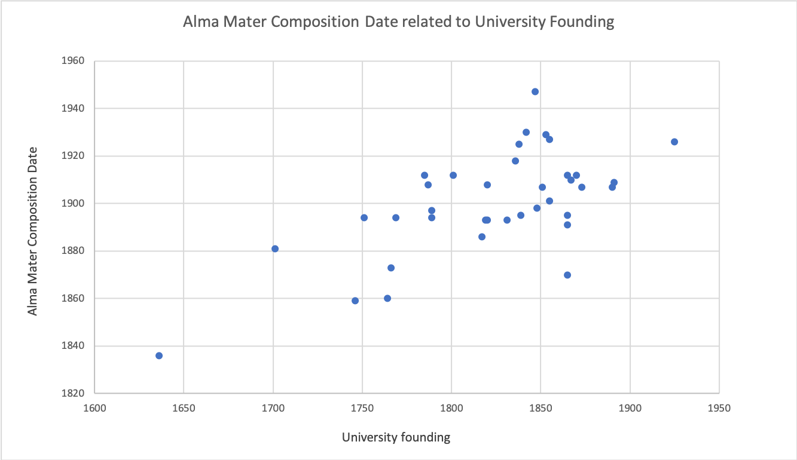

Most people can sing their university fight song, but what about the slower secondary university song, the alma mater?
This project seeks to explore the often overlooked, but still widely performed tradition of the alma mater. By collecting data on 44 university alma maters, I aim to define characteristics of the genre and situate the composition of alma mater songs in historical context.
How has this 19th century tradition persisted in the American University community? What can alma mater songs tell us about international reception and how musical traditions are practiced today?
First of all, what is an alma mater? The definition of alma mater is term Latin roughly translated as ‘bounteous mother’ as a name for the school one attended.’ In this case, the alma mater refers to a song that pays homage to the school or university attended. Key features are a slow tempo, singable melody, and words that wax poetic about the place of the school.
In practice today, the alma mater is sung or played surrounding sporting events (usually before or after, the fight song is reserved for during the event) and at ceremonial events such as graduations, convocations, and reunions. University carillons will also frequently play the alma mater at designated times echoing the song through the campus.
Alma mater songs were primarily
a late 19th and early 20th century phenomenon. However, little has changed
in the way these alma maters are presented today.

Outline of Website
Romantic Roots
Most alma maters were written in the late 19th/early 20th
century sometimes through an oral tradition and through university
musical organizations. In this section, I’ll discuss how alma maters came
to exist as a common school song. Often the melodies for alma maters were borrowed
from other well-known tunes in genres of classical, folk, national, and popular music.
I focus particularly on how Romantic era classical music was used in alma maters and what
this says about American musical practices in the late 19th century. How did these
European melodies take on a new life representing the homes of American universities?
How are these melodies uniquely qualified to inspire nostalgia for university days
among students and alumni?
The Yellow and Blue
As a test case, I’ll examine my own alma mater, the University of Michigan’s
“The Yellow and Blue.” In 1886, English Professor, Charles M. Gayley won a song
contest in for his lyrics “The Yellow and Blue.” He set the song to "Pirates' Chorus"
from "The Enchantress," an opera by the Irish composer Michael William Balfe. What does a
rollicking pirate’s chorus written by a Irish composer that is little known
today have to do with Gayley’s description of the state of Michigan?
Why does the song prize so dearly the landscape, but leave the origins of the
melody as unimportant?
Annie Lisle
The most frequently used melody for alma maters is that of Annie Lisle. It is
used by hundreds of high schools, colleges, and universities as an alma mater.
It is believed to be first used in Cornell’s “Far Above Cayuga’s Waters.” On this
page, I ask: how can one song be used to cast the same sentimental feelings to multiple
distinct places with a change of the words? What about Annie Lisle makes it
an effective alma mater melody?
Conclusions
Lastly, I trace how are alma maters used today. Do collegiate bodies
really know them? How are they used for courting the nostalgia of older
alumni? In an attempt to answer these questions, I’ll examine the case
of Roosevelt University’s alma mater that was written in 2014. The University
adapted the model of the early 20th century in the 21st with a contest for lyrics
to be the alma mater. A winner was chosen and then composition faculty member, Stacy Garrop,
wrote the music. The alma mater was to be premiered at the upcoming graduation ceremony.
However, on alumni sites, there was overall confusion about the new songs. Alumni didn’t
know the song was written at all, let alone the words or the tune. It is equally difficult
to even find the words or a recording online. It begs the question, what really is
the need of an alma mater in a contemporary, urban setting? If not to evoke nostalgia
and bring together community surrounding a place of learning, what is the point of an alma mater?
Submit your alma mater
You can contribute to the data set by entering information about your school’s alma mater and how it is used.